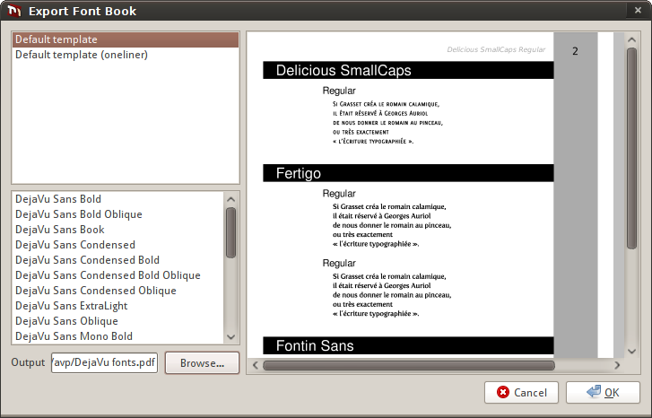
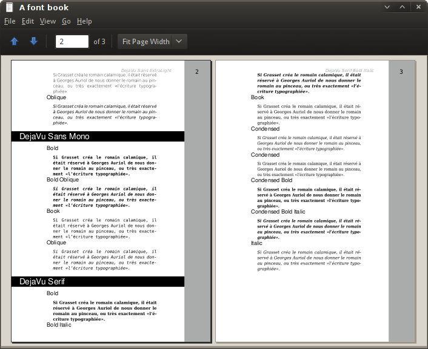

Font books are probably the easiest way to demonstrate fonts you designed to your potential customer. Fontmatrix makes creation of font books very easy.
For example, you need to create a font book of all fonts your company designed in 2009.
This will refine the list of available fonts to just the fonts that were created or updated in 2009 by your company. Now you probably want to get to this dialog:

Open the file to check the result:
